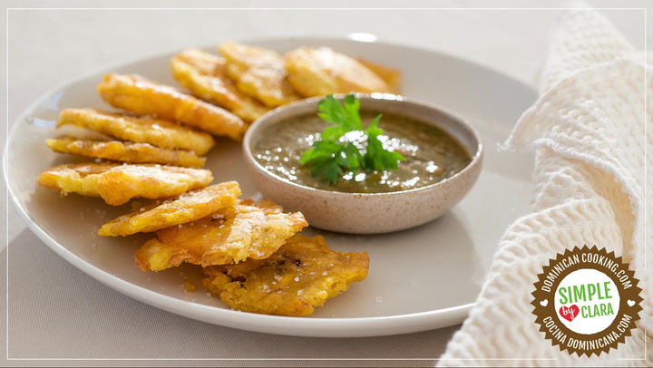

Tostones Recipe

A popular side dish that dominates most Dominican plates.
Tostones are not exclusive to Dominican cuisine but are a popular choice to add to the
plate for lunch or dinner. Usually accompanied with some sort of protein the likes of beef,
or salami, it can be combined creatively with other ingedients like tomatoes, cheese, avocado,
and/or garlic.
Ingredients
- 2 plantain (green, unripe)
- ½ cup vegetable oil, with a high smoke point, like peanut, corn or canola oil
- 1 tablespoon salt, (or more, to taste)
Steps
- Peel the plantains
- Cut 1 inch slices
- Fry the plantains
- Flatten the platains with a "tostonera"
- Fry again until golden yellow
- Sprinkle salt on top